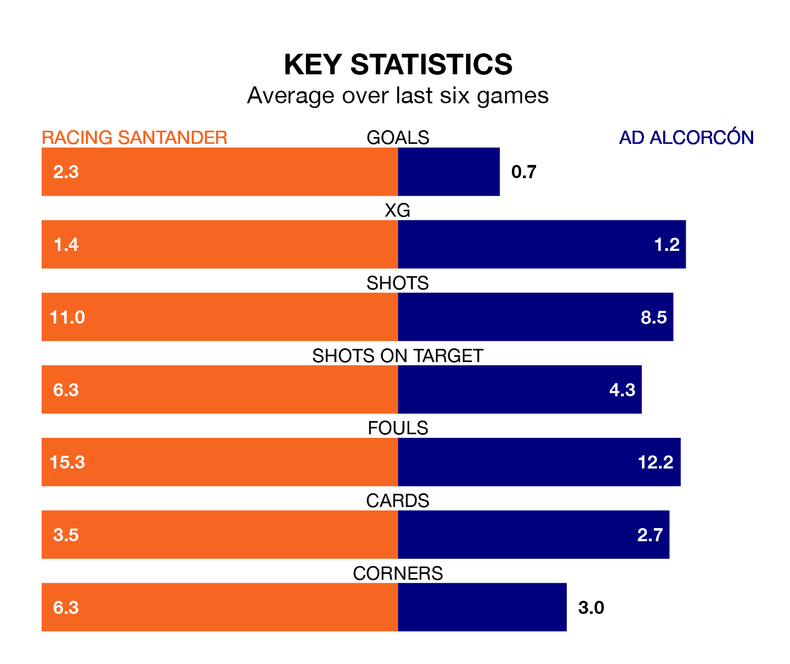

Racing Santander face AD Alcorcón on Monday seeking to protect their long unbeaten run in the Segunda División.
Racing are unbeaten in six, with four wins and two draws, ahead of the 7.30pm kick-off.
They face an Alcorcón team who have won one and drawn three over the same number of games.
With 54 goals in 33 games so far this season, Racing are the league's joint-highest scorers with 1.6 goals per game. But they are conceding more than average too, letting in 47 goals at a rate of 1.4 per game.
Alcorcón, meanwhile, are below average scorers, with 0.8 goals per game, compared to a league average of 1.1. They have conceded 1.3 goals per game.
In Gerard Fernández Castellano, the home team have one of the league's sharpest shooters so far this season. He has notched 17 goals in 32 appearances, to sit second in the scoring charts.
The visitors' top scorers, with five goals each, are Dyego Sousa and Jacobo González Rodrigañez.
Racing are fourth in the table after 33 games, of which they have won 15 and drawn eight, earning 53 points.
Alcorcón are 14 places behind Racing in 18th, with eight wins and 10 draws putting them on 34 points.
Racing's last match was on March 30, a 3-2 win against Sporting Gijón, with Juan Carlos Arana Gómez (two) and Fernández Castellano getting the goals for Racing.
Alcorcón drew 1-1 with SD Amorebieta last time out, on March 31, with González Rodrigañez on the scoresheet.
Updated: 16:41 (UTC), 04/04/24